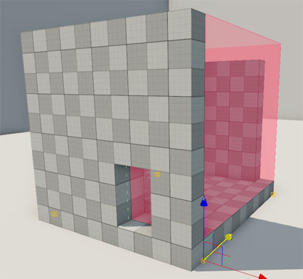
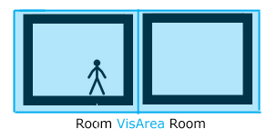
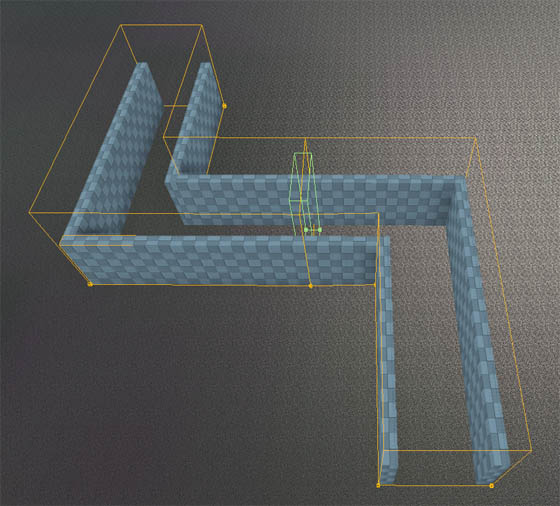

Обзор
Область видимости — это объект формы, который используется для определения внутренних зон в целях отбора и оптимизации, а также освещения.
Объекты внутри области видимости не будут отображаться снаружи, и наоборот, это может значительно повысить производительность.
Vis Areas также можно настроить так, чтобы закрывать определенные элементы освещения, например солнце, что обеспечивает гибкость в настройке освещения внутренних помещений. Обратите внимание, что начиная с CRYENGINE 3.6, AmbientColor больше не поддерживается, и вместо него следует использовать датчики среды.
Области видимости могут иметь любое количество углов; просто нажмите double, когда будет добавлен последний.
Свойства района Вис
Недвижимость | Описание |
|---|---|
Высота | Определяет высоту области видимости. |
Дисплей заполнен | Просто для видимости в редакторе эта опция определяет, должна ли область отображаться как заполненная или нет. |
Под воздействием Солнца | Указывает, могут ли тени из мира за пределами области Виса перемещаться внутрь. |
Игнорировать цвет неба | Если эта опция отключена, окружающий цвет (цвет неба в окне времени суток) не используется в помещении. |
Игнорировать GI | Если это правда, глобальное освещение не будет использоваться внутри этого объекта. |
Посмотреть соотношение расстояний | Указывает, насколько далеко отображается область видимости. |
Только небо | Позволяет пользователям видеть только скайбокс, когда вы смотрите за пределы области видимости. |
Океан виден | Указывает, должна ли визуализация океана быть видна внутри области видимости. |
Игнорировать на улице AO | Игнорирует Ambient Occlusion на открытом воздухе. |
При редактировании формы или области можно привязать вершину к местности или физическим объектам, используя Ctrl + Shift + LMB.
Это справедливо для всех объектов Area, кроме окклюдеров.
Настройка области видимости
- Расположите фигуру области видимости вокруг комнаты.
- Установите высоту.
- Убедитесь, что все, что связано, находится внутри зоны Виса.
- Постарайтесь оставаться в сетке, включив «Привязать к сетке».
- Сохраняйте форму области обзора как можно более простой.

Переход от внутреннего помещения к открытому пространству
- Если игрок покинет зону видимости (в помещении), все позади игрока исчезнет, включая стены, расположенные внутри.
- Нужны стена внутри зоны Виса и стена снаружи зоны Виса.

- Переходы из помещения в помещение обрабатываются таким же образом; нужны две стены: одна в комнате 1 и одна в комнате 2.
- Также для лучшего освещения в каждую комнату следует добавить отдельные зоны видимости.
